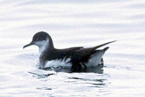
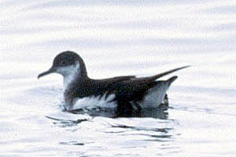

Manx Shearwater Puffinus puffinus
12 Oct 96, Monterey Bay, SCZ 1997-044
©1996 Ronald M. Saldino

Manx Shearwater Puffinus puffinus
12 Oct 96, Monterey Bay, SCZ 1997-044
©1996 Ronald M. Saldino
| These photographs accompany records that have been recently submitted to the committee. This record
has been ACCEPTED. Manx Shearwater Puffinus puffinus 12 Oct 96, Monterey Bay, SCZ 1997-044 ©1996 Ronald M. Saldino  Manx Shearwater Puffinus puffinus 12 Oct 96, Monterey Bay, SCZ 1997-044 ©1996 Ronald M. Saldino |